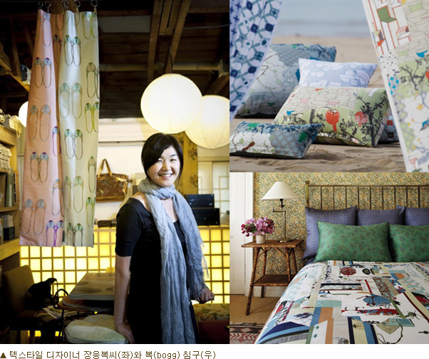

- Launch bogg in collaboration with international textile designer Chang, leading patchwork bedding trend
- At the fair, sell bogg series that has been presented at the Seoul Living Design Fair for the past 2 years
Prestige home interior brand bogg presents bedding brand bogg to the Seoul Living Design Fair, slated for 27 Feb to 3 March at COEX in Samsung-dong.
Each year, the Seoul Living Design Fair, having taken place for 19 years since 1994, presents content that reflects the latest trend with living industry, leading brand and designer from home and abroad. This year, trend-leading, representative brands will be shown under the theme of new family landscape.
Bogg, which will be introduced as a main brand at the fair, is a popular bedding brand in home-shopping due to its unique patchwork design expressing modern and Korean beauty. This is the first time that a domestic home-shopping brand presents its products at the fair.
Bogg is only-one brand (self-production brand), launched in March 2013 in collaboration with international textile designer Chang Eung-Bok. It received a lot of favorable comments from buyers from all over the world when it was exhibited at the world's biggest interior fair, Maison & Objet.
It was Designer Chang who introduced the hot keyword, ¡®Up-Cycling (transforming products that are thrown away into the one with higher value)¡¯ to the interior industry. She applied traditional skill of patchwork, which is to put pieces of fabric together, into various items including furniture, bedding, cushion, and lighting. Designer Chang's creativity is widely recognized with the establishment of ¡®MONO Collection' and interior works for luxurious hotels at home and abroad.
¡®Bogg¡¯ is considered as one of high end bedding brand as much as luxury brand at a department store by using best quality cotton, only used for premium outfit with unique design of putting together pieces of fabric on which modern patterns are printed. Despite three to four times higher price than ordinary home-shopping bedding brands, ¡®bogg' is enjoying accumulated revenue of 30 billion won.
¡°¡¯bogg¡¯ is an art work expressing Korean and modern sensibility, and garners a lot of attention from the bedding industry at home and abroad. It is also leading patchwork bedding trend - a hot trend in the home-shopping industry," says Sunyoung Lee, director of underwear/bedding business of CJ O shopping. "The participation in the fair shows that ¡®bogg' product power, which can match specialized interior brand's product, is recognized. I expect this will be the opportunity for ¡®bogg' to elevate its status and increase brand awareness in the interior industry.¡±
¡®Bogg¡¯ presents romantic Mediterranean ¡°Provence Dream,¡± launched in 2011, ¡®English Garden,¡¯ applying hexagonal patchwork pattern, and ¡®Sweet Blossom,¡¯ using flower shoes as motif at the Seoul Living Design Fair, and sell its products at the fair.
|